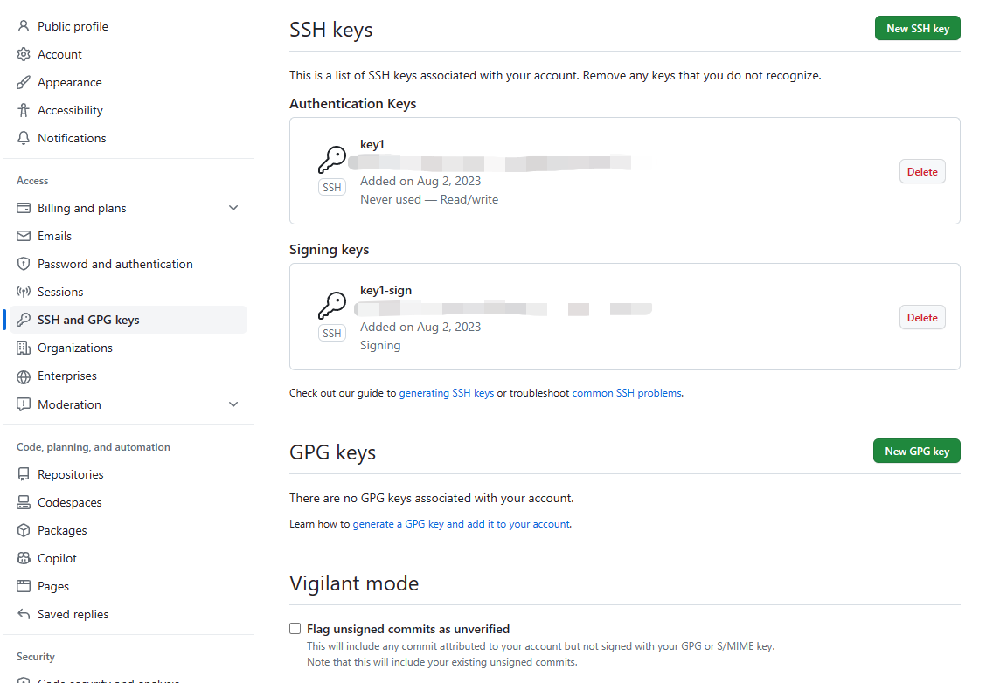
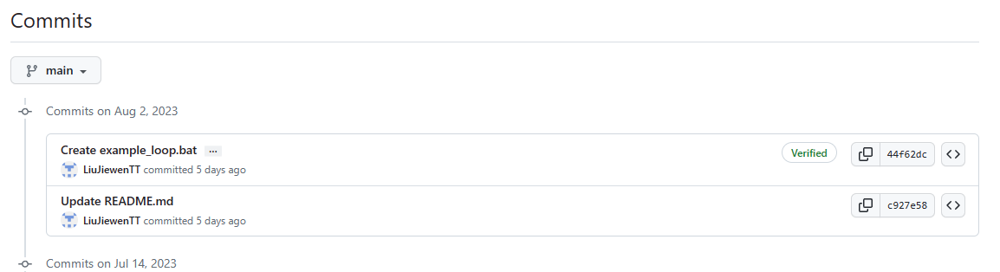

本文涉及的参考链接：
This section is to store some codes of HTML for better viewing experience.
最近，Github开始要求更严格的2FA了。收到邮件后，我进行了相关的设置后，突然发现账户安全有关于ssh的东西。然后就看到几个和密钥相关的东西。

我很好奇，正好我已经“比较熟悉”ssh了，所以就尝试着上传我的公钥。然后就看到密钥被分成两种，一种是验证用的(Authentication)，另一种是签名用的(Signing)。这里的签名其实就是用于确认签名的。这个时候我才知道，原来openssh也是可以做“签名”这件事的。一番了解，得知从openssh 8开始就支持给随机数据加密等等了，而git也是在2.34版本（Windows版是2.33）开始支持使用ssh的key给commit和tag进行签名了。
那么为什么这玩意有必要呢？因为，虽然能提交到你的git已经是有权限了，但是如果有人就是设法拿到权限了，那这会是另一条保障。在配置git的时候，只需要设置好邮箱和用户名就可以了，所以如果其他人用了你的配置，然后不知怎么地你或他把这些commit提交了，那你要怎么区分：“这些commit中的我不是我？”
在这项改动之后，凡是签了名（并且通过验证）的提交，在github上都会有一个新的标识，像这样：

如图，旧的提交没有进行签名，就不会有这个verified标识。
ssh的key怎么生成我就不提了，网络上很多资料。这里讲讲怎么给git的repository设置使用key。